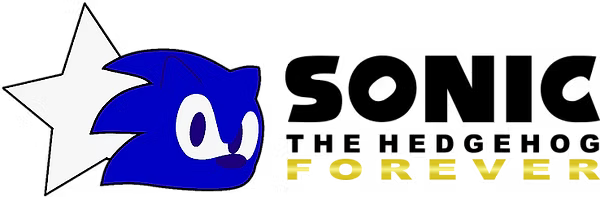
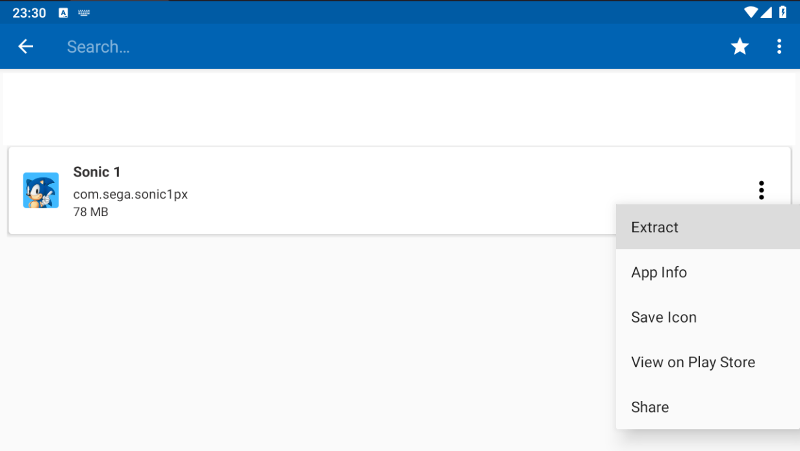
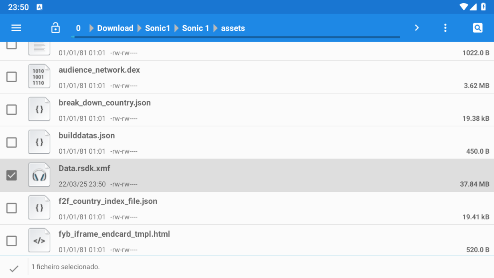
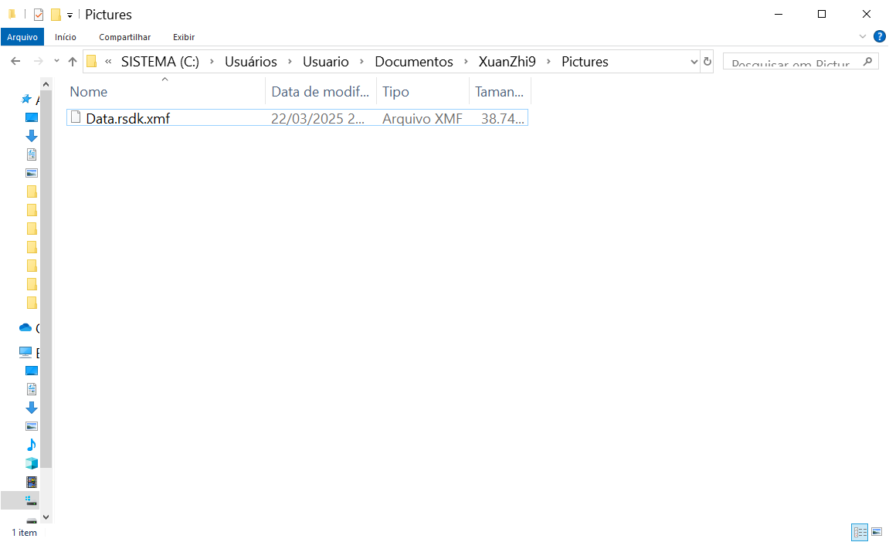

Sonic the Hedgehog Forever é um port não oficial da versão mobile de Sonic 1, criado pela Team Forever.
Ele inclui correções de bugs, uma grande quantidade de opções e modos extras em comparação ao jogo original — e até mesmo à versão mobile.
É necessário ter uma cópia do arquivo Data.rsdk.xmf do jogo original. Este guia apresenta como obter esse arquivo.
É importante mencionar que não é recomendado baixar esse arquivo da internet, pois ele pode estar desatualizado. Além disso, é possível obtê-lo gratuitamente extraindo os arquivos do próprio jogo.
Sonic the Hedgehog Forever é
um port não oficial da versão
mobile de Sonic 1 criado pela
Team Forever .
Ele inclui correções de bugs,
uma grande quantidade de
opções e modos extras
em comparação ao jogo original
e até mesmo à versão mobile.
Sonic the Hedgehog Forever é um port não oficial da versão mobile de Sonic 1 criado pela Team Forever .
Ele inclui correções de bugs, uma grande quantidade de opções e modos extras em comparação ao jogo original e até mesmo à versão mobile.
É importante mencionar que não é recomendado baixar esse arquivo da internet, pois ele pode estar desatualizado. Além disso, é possível obtê-lo gratuitamente extraindo os arquivos do próprio jogo.



Não desative o Sonic 1 Forever na opção de mods! Se isso acontecer, você não conseguirá abrir o aplicativo. Para corrigir, edite o arquivo "modconfig.ini" dentro da pasta "Mods" e altere "Sonic 1 Forever=false" para "Sonic 1 Forever=true". No celular, pode ser necessário um editor de texto.